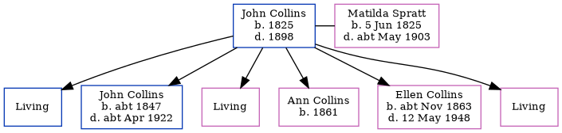

John Collins 1825 - 1898
[ Home ] | [ Calendar ] | [ Surnames Index ] | [ Errors ] | [ Family History ]John Collins, the husband of Matilda Spratt (the three times great-aunt of Nigel Horne), was born in Chislet, Kent, England in 18251,2,3,4,5,6 and married Matilda (with whom he had 6 children: William, John Elgar, Elizabeth Sarah, Ann, Ellen Jane and Ada Louisa, along with 3 surviving children) in St Nicholas-at-Wade, Kent, England on 30 Nov 18447.
During his life, he was living at his birthplace in 18511; at Reynolds Farm in Chislet on 30 Mar 185110; in Minster, Thanet, Kent in 18612; at Prospect Road, Minster, Thanet, Kent on 7 Apr 18613; in Birchington, Kent, England in 18714; at Cottage in Birchington on 2 Apr 18719; in Alkham, Kent, England in 18815 and in 18916; and at Everden in Alkham on 5 Apr 18918.
He died in 1898.
Children
- John Elgar was born c. 1847
- Ann was born in 1861
- Ellen Jane was born c. Nov 1863
Citations
- 1851 England Census Online publication - Provo, UT, USA: The Generations Network, Inc., 2005.Original data - Census Returns of England and Wales, 1851. Kew, Surrey, England: The National Archives of the UK (TNA): Public Record Office (PRO), 1851. Data imaged from the National
- 1861 England Census Online publication - Provo, UT, USA: The Generations Network, Inc., 2005.Original data - Census Returns of England and Wales, 1861. Kew, Surrey, England: The National Archives of the UK (TNA): Public Record Office (PRO), 1861. Data imaged from the National
- 1861 England, Wales & Scotland Census - Findmypast (was age 36 and the head of the household)
- 1871 England Census Online publication - Provo, UT, USA: The Generations Network, Inc., 2004.Original data - Census Returns of England and Wales, 1871. Kew, Surrey, England: The National Archives of the UK (TNA): Public Record Office (PRO), 1871. Data imaged from the National
- 1881 England Census Online publication - Provo, UT, USA: The Generations Network, Inc., 2004. 1881 British Isles Census Index provided by The Church of Jesus Christ of Latter-day Saints © Copyright 1999 Intellectual Reserve, Inc. All rights reserved. All use is subject to the
- 1891 England Census Online publication - Provo, UT, USA: The Generations Network, Inc., 2005.Original data - Census Returns of England and Wales, 1891. Kew, Surrey, England: The National Archives of the UK (TNA): Public Record Office (PRO), 1891. Data imaged from The National
- England & Wales, FreeBMD Marriage Index: 1837-1915 Online publication - Provo, UT, USA: The Generations Network, Inc., 2006.Original data - General Register Office. England and Wales Civil Registration Indexes. London, England: General Register Office. © Crown copyright. Published by permission of the Cont
- 1891 England, Wales & Scotland Census - Findmypast (was age 64 and the head of the household)
- 1871 England, Wales & Scotland Census - Findmypast (was age 45 and the head of the household)
- 1851 England, Wales & Scotland Census - Findmypast (was age 26 and the head of the household)
Family Tree
Map
Generated by ged2site. Last updated on Jul 3, 2024
Known Issues
Death date (1898) has no citations
Date of death is known, but not place